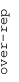
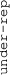

These results are also available as PDF and EPS documents.
Depending on your display resolution, scrolling or zooming may be necessary.
|  |
| 3 |
| 0 |
| -3 |
|  |
| GO:0050840 extracellular matrix binding | |||||||||||
| GO:0007169 transmembrane receptor protein tyrosine kinase signaling pathway | |||||||||||
| GO:0005544 calcium-dependent phospholipid binding | |||||||||||
| GO:0045746 negative regulation of Notch signaling pathway | |||||||||||
| GO:0007140 male meiotic nuclear division | |||||||||||
| GO:0050729 positive regulation of inflammatory response | |||||||||||
| GO:0005496 steroid binding | |||||||||||
| GO:0005581 collagen trimer | |||||||||||
| GO:0016064 immunoglobulin mediated immune response | |||||||||||
| GO:0060666 dichotomous subdivision of terminal units involved in salivary gland branching | |||||||||||
| GO:0071205 protein localization to juxtaparanode region of axon | |||||||||||
| GO:0043395 heparan sulfate proteoglycan binding | |||||||||||
| GO:0007156 homophilic cell adhesion via plasma membrane adhesion molecules | |||||||||||
| GO:1902476 chloride transmembrane transport | |||||||||||
| GO:0021650 vestibulocochlear nerve formation | |||||||||||
| GO:0005770 late endosome | |||||||||||
| GO:0006897 endocytosis | |||||||||||
| GO:0001078 transcriptional repressor activity, RNA polymerase II core promoter proximal region sequence-specific binding | |||||||||||
| GO:0005085 guanyl-nucleotide exchange factor activity | |||||||||||
| GO:0005741 mitochondrial outer membrane | |||||||||||
| GO:0007517 muscle organ development | |||||||||||
| GO:0035580 specific granule lumen | |||||||||||
| GO:1903507 negative regulation of nucleic acid-templated transcription | |||||||||||
| GO:0032981 mitochondrial respiratory chain complex I assembly | |||||||||||
| GO:1904115 axon cytoplasm | |||||||||||
| GO:0035579 specific granule membrane | |||||||||||
| GO:0015992 proton transport | |||||||||||
| GO:0009060 aerobic respiration | |||||||||||
| GO:0031305 integral component of mitochondrial inner membrane | |||||||||||
| GO:0019216 regulation of lipid metabolic process | |||||||||||
| GO:0032266 phosphatidylinositol-3-phosphate binding | |||||||||||
| GO:0000042 protein targeting to Golgi | |||||||||||
| GO:0005516 calmodulin binding | |||||||||||
| GO:0031334 positive regulation of protein complex assembly | |||||||||||
| GO:1901687 glutathione derivative biosynthetic process | |||||||||||
| GO:0000408 EKC/KEOPS complex | |||||||||||
| GO:0045669 positive regulation of osteoblast differentiation | |||||||||||
| GO:0003950 NAD+ ADP-ribosyltransferase activity | |||||||||||
| GO:0008146 sulfotransferase activity | |||||||||||
| GO:0005132 type I interferon receptor binding | |||||||||||
| GO:1903231 mRNA binding involved in posttranscriptional gene silencing | |||||||||||
| GO:0002377 immunoglobulin production | |||||||||||
| GO:0045095 keratin filament | |||||||||||
| GO:0050907 detection of chemical stimulus involved in sensory perception | |||||||||||
| GO:0005549 odorant binding | |||||||||||
| GO:0042571 immunoglobulin complex, circulating | |||||||||||
| GO:0006260 DNA replication | |||||||||||
| GO:0006417 regulation of translation | |||||||||||
| GO:0000775 chromosome, centromeric region | |||||||||||
| GO:0008168 methyltransferase activity | |||||||||||
| GO:0005681 spliceosomal complex | |||||||||||
| GO:0042254 ribosome biogenesis | |||||||||||
| GO:0000086 G2/M transition of mitotic cell cycle | |||||||||||
| GO:0006368 transcription elongation from RNA polymerase II promoter | |||||||||||
| GO:1902036 regulation of hematopoietic stem cell differentiation | |||||||||||
| GO:0006338 chromatin remodeling | |||||||||||
| GO:0080008 Cul4-RING E3 ubiquitin ligase complex | |||||||||||
| GO:0008022 protein C-terminus binding | |||||||||||
| GO:0006888 ER to Golgi vesicle-mediated transport | |||||||||||
| GO:0000151 ubiquitin ligase complex | |||||||||||
| GO:0007346 regulation of mitotic cell cycle | |||||||||||
| GO:0060271 cilium assembly | |||||||||||
| GO:0006486 protein glycosylation | |||||||||||
| GO:0005637 nuclear inner membrane | |||||||||||
| GO:0001731 formation of translation preinitiation complex | |||||||||||
| GO:0003735 structural constituent of ribosome | |||||||||||
| GO:0006457 protein folding | |||||||||||
| GO:0051213 dioxygenase activity | |||||||||||
| GO:0050790 regulation of catalytic activity | |||||||||||
| GO:0006461 protein complex assembly | |||||||||||
| GO:0016409 palmitoyltransferase activity | |||||||||||
| GO:0016311 dephosphorylation | |||||||||||
| GO:0034599 cellular response to oxidative stress | |||||||||||
| GO:1990830 cellular response to leukemia inhibitory factor | |||||||||||
| GO:0010035 response to inorganic substance | |||||||||||
| GO:0004843 thiol-dependent ubiquitin-specific protease activity | |||||||||||
| GO:0043984 histone H4-K16 acetylation | |||||||||||
| GO:0000445 THO complex part of transcription export complex | |||||||||||
| GO:0008656 cysteine-type endopeptidase activator activity involved in apoptotic process | |||||||||||
| GO:0043101 purine-containing compound salvage | |||||||||||
| GO:0003841 1-acylglycerol-3-phosphate O-acyltransferase activity | |||||||||||
| GO:0016180 snRNA processing | |||||||||||
| GO:0072546 ER membrane protein complex | |||||||||||
| GO:0072321 chaperone-mediated protein transport | |||||||||||
| GO:0031123 RNA 3'-end processing | |||||||||||
| GO:0004177 aminopeptidase activity | |||||||||||
| GO:0008139 nuclear localization sequence binding | |||||||||||
| GO:0000796 condensin complex | |||||||||||
| GO:0000178 exosome (RNase complex) | |||||||||||
| GO:0016829 lyase activity | |||||||||||
| GO:0008180 COP9 signalosome | |||||||||||
| GO:0016874 ligase activity | |||||||||||
| GO:0015718 monocarboxylic acid transport | |||||||||||
| GO:0009982 pseudouridine synthase activity | |||||||||||
| GO:0006415 translational termination | |||||||||||
| GO:0016926 protein desumoylation | |||||||||||
| GO:0003951 NAD+ kinase activity | |||||||||||
| GO:0004596 peptide alpha-N-acetyltransferase activity | |||||||||||
| GO:0070402 NADPH binding | |||||||||||
| GO:0004553 hydrolase activity, hydrolyzing O-glycosyl compounds |